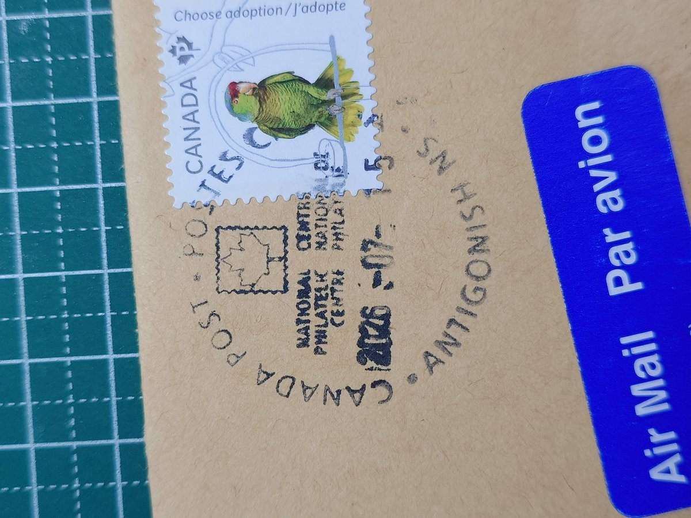

National Philatelic Centre pictorial cancel
National Philatelic Centre
- Status
- Active
- Run dates
- ? to present
- Design
- National Philatelic Centre
- Ink colour
- Black
- Designer
- Unknown
- Size
- 35mm × 35mm mm
- Post office
- National Philatelic Centre
133 Church St. Unit 1
Antigonish, NS
B2G 2R8
Collect it by mail. Send your stamped covers, with a stamped return envelope, to the post office address above. How to collect pictorial cancels by mail · en français
 Pictou POShip Hector / Launch 2000
Pictou POShip Hector / Launch 2000 Hopewell POHopewell Footbridge
Hopewell POHopewell Footbridge Inverness POCABOT
Inverness POCABOT